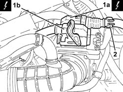
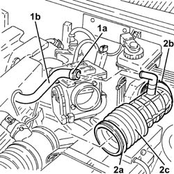
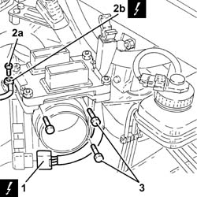
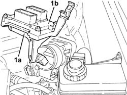
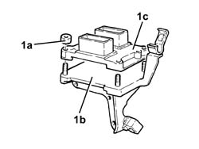
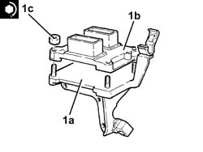
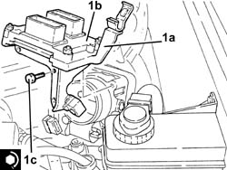

1056B87 ignition/injection system control unit mount - r r
- Path
- Procedures > 10 ENGINE > 1056 PETROL INJECTION SYSTEM > 1056B multi-point injection system (mpi) > 1056B87 ignition/injection system control unit mount - r r
- Kind
- repair procedure (removal / refitting; the operation number is the code)
- Applies to
- engines: 1.6 TS , 1.8 TS; all production periods
- Interactive page
- https://sloeber94.github.io/elrnDB-a156/en/#/3237688
Applies to: engines: 1.6 TS , 1.8 TS; all production periods
 Removing
Removing
 Refitting
RefittingEnsure that the ignition key is in the stop OFF, then disconnect the battery negative terminal.
 | Name | Connector |
|---|---|---|
- | Battery |
1. Disconnect electrical connections (1a) and (1b) from the injection-ignition control unit.
| Name | Connector |
|---|---|---|
1a | Engine management ECU |
| Name | Connector |
|---|---|---|
1b | Engine management ECU |
2. Release the electrical wiring from the fastening on the ignition/injection system control unit mount.

Applies to: engines: 1.6 TS , 1.8 TS; all production periods
1. Loosen the band (1a) and disconnect the oil vapour recirculation pipe (1b) from the corrugated hose.
2. Slacken the bands (2a) and (2b), then remove the corrugated sleeve.

Applies to: engines: 1.6 TS , 1.8 TS; all production periods
1. Disconnect the electrical connection from the throttle body integrated with D.V.L. and release the wiring from the band on the mount.
| Name | Connector |
|---|---|---|
1 | Throttle body actuator |
2. Undo nut (2a) and disconnect earth lead (2b) from the injection-ignition control unit mount
| Name | Connector |
|---|---|---|
2b | Earth on engine |
3. Undo the bolts securing the ignition/injection system control unit mounting.

Applies to: engines: 1.6 TS , 1.8 TS; all production periods
1. Remove ignition/injection system control unit mount (1a) with control unit (1b).

Applies to: engines: 1.6 TS , 1.8 TS; all production periods
1. Working at the bench, undo nuts (1a) and separarate the ignition/injection system control unit mount (1b) from control unit (1c).

Applies to: engines: 1.6 TS , 1.8 TS; all production periods
Refitting
Removing1. Working at the bench, assemble control unit (1a) to injection/ignition control unit mount (1b) and secure by tightening nuts (1c) to the specified torque.
 | Fastening | Component | Ø | Value (daNm) |
|---|---|---|---|---|
1c | - | - | - | - |

Applies to: engines: 1.6 TS , 1.8 TS; all production periods
1. Refit the ignition/injection control unit mount (1a) with control unit (1b) and secure by tightening bolts (1c) to the specified torque.
| Fastening | Component | Ø | Value (daNm) |
|---|---|---|---|---|
1c | Bolt | BUTTERFLY VALVE CASE/S (MPI) | M6 | (Modular intake manifold side) 0.8 ÷ 1.1 |

Applies to: engines: 1.6 TS , 1.8 TS; all production periods
Connect the earth lead to the injection / ignition control unit mount and secure it with its bolt.
Connect the electrical connection to the throttle body integrated with the D.V.L. and secure the wiring to the band on the mount.
Refit the corrugated sleeve back in its seating and secure it using the bands.
Connect the oil vapour recirculation pipe to the corrugated hose and tighten the band.
Connect the electrical connections to the injection-ignition control unit and secure the electrical wiring to the ignition/injection system control unit mount.
Connect the battery terminal (-).